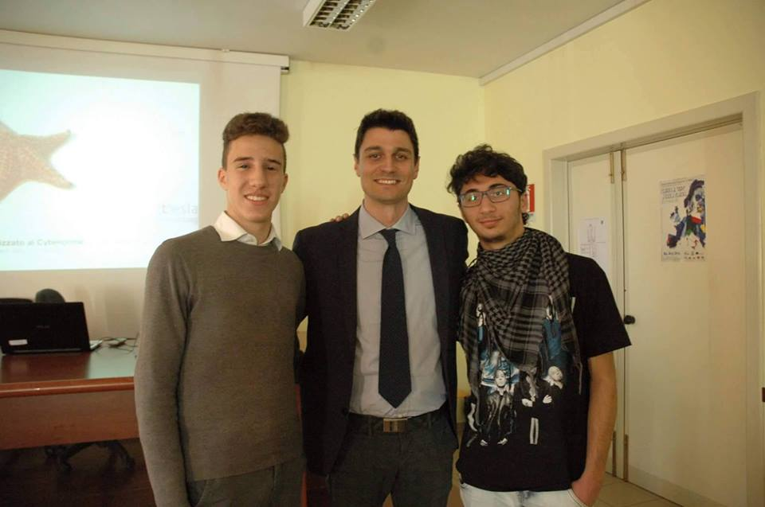

Junior Full Stack Developer Creator
Questa è la mia esperienza di Alternanza Scuola LavoroL’alternanza scuola-lavoro è l’innovazione più significativa introdotta negli ultimi decreti pensati per una scuola aperta. Questa va intesa come un balcone attraverso il quale gli studenti, quasi maturandi, si affacciano sul mondo del lavoro per sperimentare, attraverso una summa di tutte le competenze tecniche e teoriche, un nuovo modus operandi e per fornire loro un approccio meno bruto a quello che sarà poi il mondo del lavoro. Riassumendo, l’alternanza scuola-lavoro ha una bivalenza: da un lato permette di mettersi alla prova, dall’altro ammortizza l’impatto con il mondo lavorativo che, prima o poi, spetterà a tutti. Un terzo obiettivo che si può aggiungere è quello di ridurre il tasso di disoccupazione giovanile.
L’alternanza scuola-lavoro, essendo estesa a tutte le scuole superiori di secondo grado, si presenta in numerose tipologie, che spaziano da corsi per ampliare le proprie conoscenze (anche trasversali) a veri e propri “banchi di prova” (lavoro presso azienda, simulazione d’impresa ecc.). Per questo motivo è impossibile definire ed elencare quali sono tutte le tipologia di alternanza scuola-lavoro. Ciò che va detto piuttosto è che non l’alternanza scuola-lavoro non va confusa come uno sfruttamento dei ragazzi (visti solo come braccia da lavoro), ma come ampliamento dei confini per i ragazzi, che andrebbero soprattutto seguiti per evitare che questa occasione venga sprecata.
Per l’anno scolastico 2018-2019 sono state introdotte alcune novità, elencate qui di seguito:
Il patto formativo è una manifestazione di impegno da parte di ogni studentessa e studente di rispetto di norme comportamentali, antinfortunistiche, in materia di sicurezza sul lavoro e di privacy. Il documento può essere richiesto presso le Segreterie delle Scuole o contattando il proprio docente tutor/referente per l’Alternanza. Dopo essere stato firmato dallo studente interessato (se minorenne, viene firmato dai soggetti con responsabilità genitoriale), il documento verrà allegato alla Convenzione e al Progetto Formativo.
ANFOS Servizi – esperti in Formazione sulla Sicurezza sul Lavoro – è un’azienda che da anni promuove la formazione sui temi della Sicurezza sul Lavoro attraverso l’erogazione di numerosi servizi, obbligatori per essere in regola con il Testo Unico Sicurezza (d.lgs 81/08 e s.m.i.): dalla formazione dei lavoratori a servizi di consulenza su tutto il territorio nazionale.
Grazie all’esperienza fornitaci con il conseguimento di un corso sulla sicurezza sul lavoro da parte di ANFOS, abbiamo appreso quali sono le regole, le procedure e le misure preventive che vanno adottate per rendere più sicuri i luoghi di lavoro. Quest’ultima (la sicurezza sul lavoro) è totalmente a carico del datore di lavoro che deve attuare tutte le prevenzioni indicate dalla legge.
Attestato ANFOS Andrea DipaceUna tra le cose più importanti che abbiamo imparato è la classificazione delle figure della sicurezza sul lavoro e i loro compiti/doveri, infatti abbiamo:
DEFT Linux è una distribuzione GNU/Linux live di software libero basata su Ubuntu per usi legati alla Computer Forensics e alla sicurezza informatica.

(Io, Luigi e Stefano Fratepietro)Io e Luigi Dimicco (in foto a destra), abbiamo collaborato per un periodo di circa 5 mesi con Stefano Fratepietro (in foto al centro), il quale ci ha formati su come customizzare distro GNU/Linux per poi successivamente pubblicarle. L'idea iniziale era quella di formarci per poi successivamente affidarci DEFT, la sua distro. A causa di impegni, imprevisti e mancata comunicazione da entrambi i lati, ciò non è stato possibile.
Di fianco una foto del primo incotro con Fratepietro, quando venne a tenere un seminario sulla sicurezza nella nostra scuola.
Un’ottima occasione che la scuola ci ha dato è stata quella di partecipare ad un corso all’Università di Foggia, che ci ha permesso di avere delle fondamenta in merito alle start up. Il corso infatti si chiamava “Introduzione alle start up” e venne aperto con un bellissimo discorso da parte di Giovanni Nigro, docente universitario, su cos’è il lavoro e il rapporto, negli ultimi anni, dei giovani con esso. Il corso aveva come obbiettivo quello di farci capire come un’idea può essere messa sul mercato e fatta fiorire, tralasciando il lato tecnico, dal punto di vista burocratico ed economico. Infatti, ci sono stati introdotti concetti puramente economici, quali: BEA (Break Even Analysis); BEP (Break Even Point); analisi SWAT (Strengths Weakness Opportunity Threats). i vari tipi di società quali: srl, spa e infine start up.
Attraverso il corso "Le basi dell'IOT" abbiamo appreso come sviluppare e realizzare un nostro progetto (partendo da un'idea) attraverso Arduino (microcontrollore) e Raspberry Pi (embedded computer). A primo impatto, questo corso può sembrare disconnesso da quello precedente ma, come detto prima, con questo corso possiamo passare dal teorico al pratico, trovandoci alla fine con un prodotto finito da mettere sul mercato: un modo per fare questo sono proprio le startup! Ed ecco il collegamento fra i due corsi.
Il programma di ASL del quarto anno scelto dai nostri professori prevedeva l'ideazione e la progettazione di una "macchina inutile": una macchina fisica, anche priva di senso, da progettare e realizzare attraverso l'uso di alcune tecnologie studiate fino a quel momento (più alcune acquisite in fase di sviluppo).
Il nome Ad.Tech.Y deriva dall'unione dei tre punti cardine del nostro progetto: Advertising, Technology, Young.
Advertising perché il nostro progetto aveva come ultimo obiettivo quello di fare pubblicità ai negozi che lo utilizzavano.
Technology perché naturalmente ci avvalevamo di questa.
Young perché eravamo un gruppo di ragazzi, tutti minorenni.
Il progetto ideato dal gruppo di Ricerca Scientifica si chiamava Fall For Safe: questo consisteva in una parete lungo la quale una pallina doveva cadere e entrare in un blocco che avrebbe poi decretato la percentuale di sconto da regalare al cliente. La parete era però riempita da pistoncini, disposti in modo tale da cercare di deviare il più possibile il percorso della pallina, che iniziava da una posizione scelta dal telefono giocatore di turno, in maniera del tutto visuale.
Per gestire al meglio questo progetto, abbiamo diviso i membri della classe in vari gruppi, divisi per area e impiego (i nomi evidenziati rappresentano i capi reparto).
| Area | Membri |
|---|---|
| Ricerca Scientifica e comitato direttivo | Andrea Dipace (CEO) Roberto Maffucci Perrotta Giovanni |
| Pubblicità e produzioni multimediali (riprese, foto, fotoritocco, video making, regia) | Gabriele Rizzo Ditrani Francesco Dinoia Andrea Fraccaroli Corinne Sforza Gianfranco Valentina Rinaldi |
| Unity e C# | Antonio Lopez Alessandro Turi Damiano Alessandro Antonio Zagaria |
| WEB, javascript, PHP | Francesco Cellamare Marco Bruno Andrea Dipace |
| Grafica e progettazione 2D e 3D (loghi, locandine, manifesti) | Roberto Maffucci Luca Digiovanni Roberto Russolillo Michele Rasola Ilaria Forlano |
| Costruzioni, assemblaggio, CAD, Arduino | Trallo Nicola Carmine Casto Denicola Tarquinio Perrotta Giovanni Roberto Maffucci Cibuku Beoldi |
| Segreteria, economato, documentazione aziendale | Ilaria Forlano Antonio Zagaria |
| Logistica | Sforza Gianfranco Antonio Zagaria |
Tutto ciò andava però gestito da una persona, che aveva il compito di amministrare il tutto: l'amministratore delegato, o in inglese, il CEO (Chief Executive Officer). Per scegliere questa figura molto importante si sono svolte delle votazioni, vinte da me (Andrea Dipace). Questo mi ha concesso la nomina di CEO, affiancato da Giovanni Perrotta (vice CEO).
Prima di sviluppare il progetto, il gruppo di ricerca scientifica ha dovuto progettarlo, facendo anche uno studio di fattibilità per capire quanto fosse concretamente possibile sviluppare il progetto ideato. Subito dopo, il progetto è stato spiegato ai vari gruppi, delegando a questi i vari compiti e fornendoli il materiale necessario (dispense) per iniziare a lavorare. I vari progressi fatti dai gruppi venivano seguiti passo passo dal CEO, dai vari capi gruppo e soprattutto dal tutor aziendale (prof. Salvatore Alfieri). Alla fine dello sviluppo e del testing delle varie componenti, abbiamo unito tutto e l’abbiamo portato alla Maker Faire di Foggia.
Somewhere in the world
andrea.dipace.00@gmail.com
Mobile: (+39) 389 477 6966